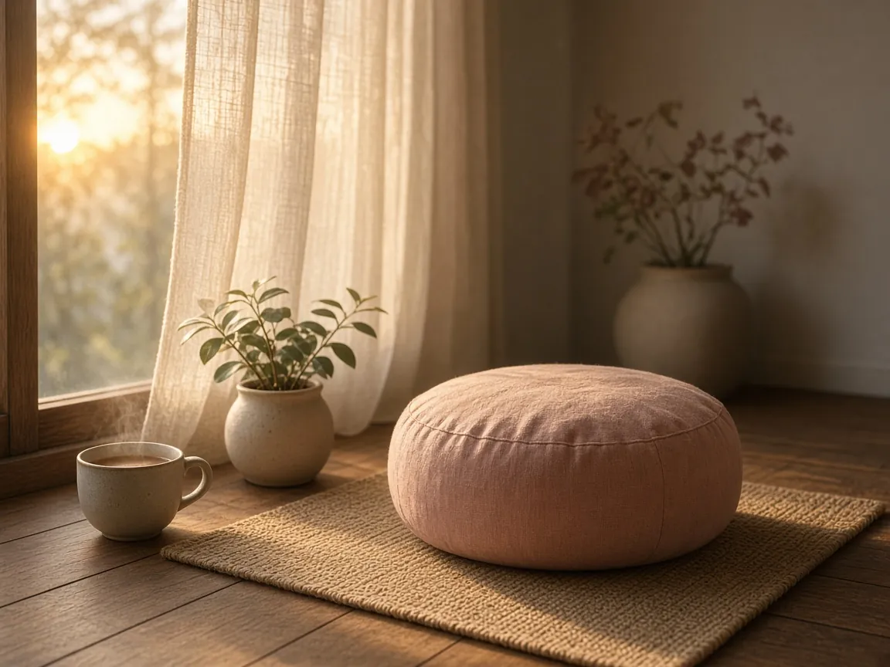

A 5-minute morning meditation for beginners
There is a particular kind of quiet that exists only in the first few minutes after waking. The house is still, the day has not yet made its demands, and your mind has not fully picked up the threads of yesterday's worries. This is one of the best moments to meditate — not because mornings are magical, but because they are uncluttered. Five minutes here can shape the tone of the hours that follow.
If you have never meditated before, or if you have tried and decided you are "bad at it," this practice is for you. It asks for no special equipment, no particular belief, and no ability to empty your mind. (Nobody can do that, by the way. Not even monks.) It asks only that you sit, pay attention, and begin again whenever you notice you have drifted.
Before you begin
A little preparation removes most of the friction that makes a new habit fail. Try deciding the following the night before, so that the morning version of you does not have to negotiate:
- Where you will sit. The edge of your bed, a chair by a window, or a cushion on the floor all work. Choose a place you can reach in under thirty seconds.
- When you will sit. Link the practice to something you already do: after you brush your teeth, or while the kettle boils. Anchoring a new habit to an old one is far more reliable than willpower.
- How you will time it. Set a gentle alarm on your phone for five minutes and place the phone face down. Not watching the clock is half the rest.
The practice: five minutes, four stages
Minute one — Arrive
Close your eyes, or let your gaze rest softly on the floor a few feet in front of you. Take three slow, deliberate breaths: in through the nose, out through the mouth, a little longer on the exhale each time. With each out-breath, imagine you are setting something down — your phone, your to-do list, the conversation you are already rehearsing. You can pick them all up again in five minutes.
Minute two — Feel the body
Let your breathing return to its natural rhythm. Now bring your attention to the places where your body makes contact with something: your feet on the floor, your weight on the seat, your hands resting on your legs. Notice temperature, pressure, texture. You are not trying to relax these areas or change anything. You are simply checking in, the way you might glance around a room when you first enter it.
Minutes three and four — Follow the breath
Choose one place where the breath is easy to feel. For some people it is the cool air at the tip of the nose; for others it is the rise and fall of the belly. Rest your attention there and follow one full breath, from the very beginning of the inhale to the very end of the exhale. Then follow another.
Within a few breaths, your mind will wander. You will find yourself planning breakfast, replaying an email, or wondering whether you are doing this right. This is not failure. This is the practice. The moment you notice you have wandered is the moment of mindfulness. Silently note where you went — "planning," "worrying," "remembering" — and gently escort your attention back to the breath. You may do this twenty times in two minutes. Each return is a single repetition, like lifting a small weight. It is how the muscle of attention grows.
The moment you notice your mind has wandered is not a lapse in meditation. It is meditation.
Minute five — Set a tone
In the final minute, widen your attention to include the whole body breathing, and the sounds of the room around you. Then ask yourself a simple question: How do I want to move through today? Do not hunt for a perfect answer. Let a single word arise — patient, curious, kind, steady — and hold it lightly. When the timer sounds, take one more full breath, open your eyes slowly, and notice the first thing you see.
Common stumbling blocks
"I can't stop thinking." You are not supposed to. Thoughts are what minds do, the way hearts beat. Meditation is not about stopping thought but changing your relationship to it — seeing thoughts as passing weather rather than as commands you must obey.
"I fall asleep." Sit more upright, open your eyes slightly, or meditate after a glass of water and a splash of cold water on your face. If it keeps happening, it may be a sign you need more sleep, which is useful information in itself.
"I forget to do it." Make it smaller. One minute done daily beats twenty minutes done twice a month. Put your cushion where you will trip over it. Leave a sticky note on the kettle. Habits are built by repetition, not intensity.
"I don't feel anything." Some days you will feel calm and spacious; most days you will feel ordinary. The benefits of meditation tend to show up not during the session but later — in the half-second pause before you snap at someone, or in noticing the light through the trees on your commute.
Making it last
Try this practice every morning for two weeks before you judge it. Keep a tiny log: just a tick on a calendar, or a single sentence about how the session felt. After fourteen days, read back through it. Most beginners are surprised by how much has shifted — not dramatically, but in the quiet, cumulative way that a path forms across a meadow simply because someone keeps walking it.
When five minutes begins to feel easy, you can extend to seven, then ten. But there is no prize for long sits. The real goal is not to become a person who meditates for an hour, but to become a person who can return to the present moment — again and again, gently, for the rest of the day.

Written by Elrond
Founder of Willowhush. Practicing, forgetting, and beginning again, one breath at a time. More about Willowhush →